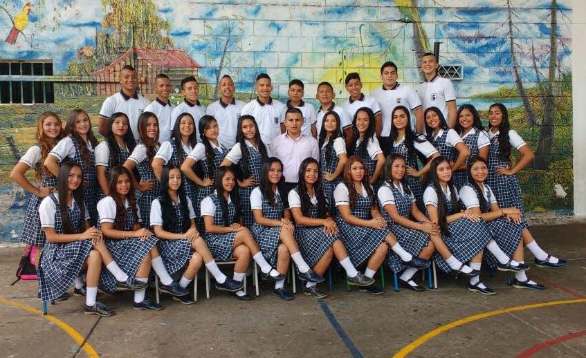
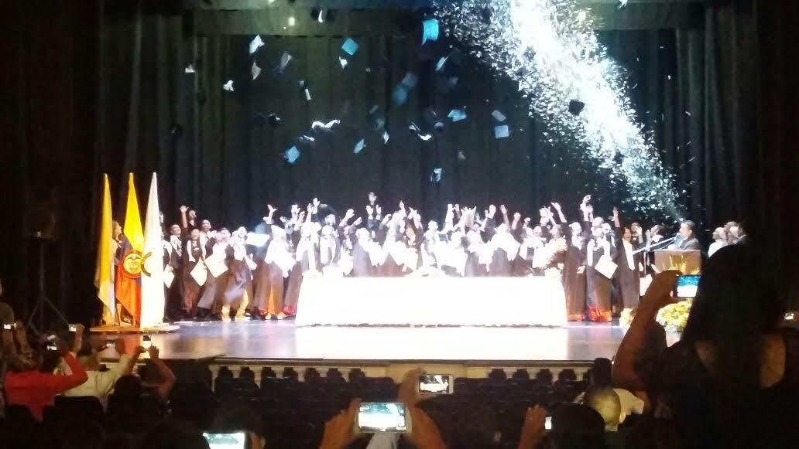
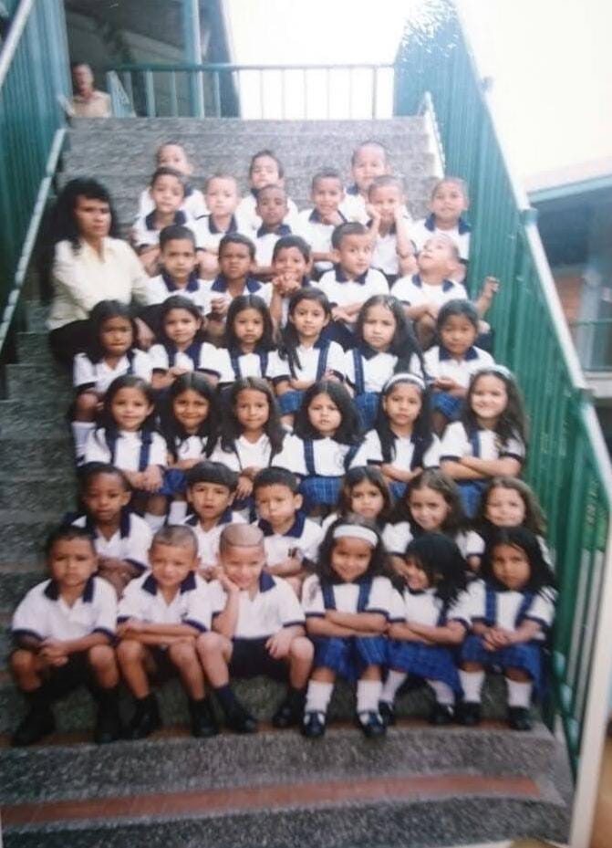

JULIAN RICARDO ARANDA GUTIERREZ, NACIDO EL 25 DE FEBRERO DE 1999, COLOMBIA CALI, VALLE DEL CAUCA. Vive en cali, en el barrio pueblo joven, con su padre Ricardo Aranda Guerrero, su madre Venus Gutierrez Erazo, las hermanas Diana Mayarly Aranda Gutierrez y Cindy Kartheine Aranda Gutierrez. Tubo una infancia sociable.
básicamente fue basada en estudiarn desde el 2005 a sus 5 años, hasta 2016 a sus 17 años, Estudio la primaria (2005-2010) y el bachiller (2010-2016) en el colegio Juan Pablo II ubicado en el mismo barrio, destacado por su buen comportamiento ademas de académicamente por sus capacidades numéricas participando en olimpiadas matemáticas organizadas por la Universidad Del Valle. Salio con el titulado de bachiller técnico enauxiliar administrativo.
  